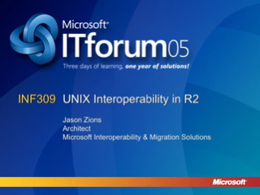
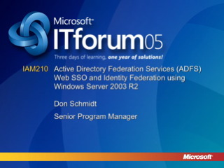
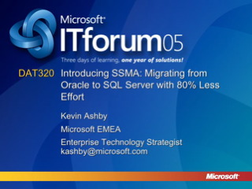
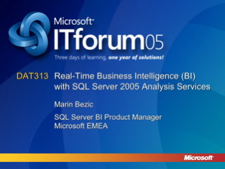
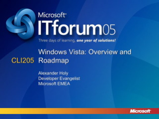
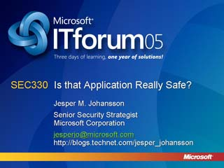
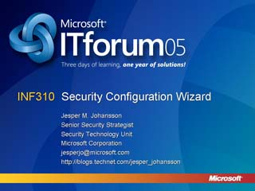

UNIX Interoperability in Windows Server 2003 R2

Speaker(s): Jason Zions
Active Directory Federation Services: WebSSO and Identity Federation using Windows Server 2003 R2

Speaker(s): Don Schmidt
Introducing SSMA: Migrating from Oracle to SQL Server with 80% Less Effort

Speaker(s): Kevin Ashby
Real-Time Business Intelligence (BI) with SQL Server 2005 Analysis Services

Speaker(s): Marin Bezic
Windows Vista: Overview and Roadmap

Speaker(s): Alexander Holy
What's New in Windows Server 2003 R2
Speaker(s): John Craddock
Access Control Lists (ACL) In-Depth
Speaker(s): Jesper M. Johannson
Is that Application Really Safe

Speaker(s): Jesper M. Johannson
Authentication for UNIX and Linux Systems with Windows Active Directory
Speaker(s): Jason Zions
Security Policy Management and the Security Configuration Wizard

Speaker(s): Jesper M. Johannson